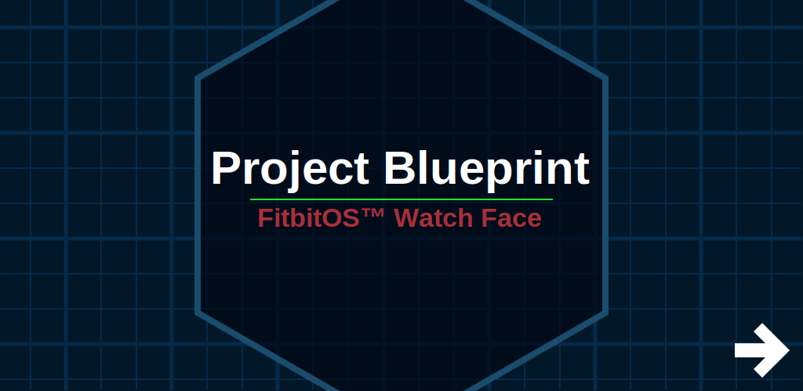

MarsLink was built with the goal to give people an easy way to stay in touch with their inner scientist
as Curiosity studies Gale Crater on Mars.
MarsLink allows real-time Mars images from Curiosity to be
used as the background for your device. When active, MarsLink will cycle through that day’s downloaded
images every half hour. An auto-update feature can be enabled to automatically check for new images from
the rover every 12 hours. With both of these options active, you never need to open the app to see the
latest images from Mars.
MarsLink is available on Google Play. Click the link below to see our store listing!
Google Play and the Google Play logo are trademarks of Google Inc.
MarsLink Orbital was created so the amazing images and data captured by the HiRISE camera on the Mars Reconnaissance
Orbiter could benefit a wider audience. When the main toggle switch is activated, it will set the current orbital image as
the wallpaper and lock screen. If you choose to, you can also let your phone/tablet automatically retrieve new images based
on a selected time interval. Each time the app attempts to update the image, it retrieves a random image and the related
scientific data from our database. We hope you enjoy exploring Mars from Orbit!
MarsLink Orbital is available on
Google Play. Click the link below to see our store listing!
Google Play and the Google Play logo are trademarks of Google Inc.
MarsLink Orbital
Project Martian
Project Blueprint
MarsLink

About Us